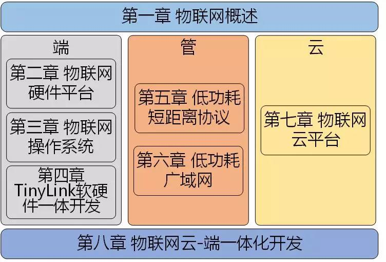

从创意到原型：物联网应用快速开发

类型
出版物
科学出版社
内容简介
本书共分8 章。内容涉及物联网“端-管-云”全链路开发流程。 第1章介绍物联网发展现状、应用架构、典型应用； 第2、3 章分别从硬件平台和操作系统的角度介绍物联网设备端开发； 第4 章介绍基于TinyLink 系统的物联网设备端快速开发； 第5、6 章分别介绍物联网应用中常用的低功耗短距离以及长距离通信技术； 第7、8 章分别介绍目前主流的物联网云平台和物联网云-端一体化开发平台。

本书面向的读者
本书适合作为高等院校计算机、通信、物联网工程等专业的高年级本科生、研究生的教学用书， 也适合作为物联网专业开发人员的技术参考用书。
课件、案例代码及视频
| 章节 | 课件 | 案例代码 | 案例演示视频 |
|---|---|---|---|
| 第一章：物联网概述 | 地址 | ||
| 第二章：物联网硬件平台 | 地址 | 室内环境监测 | 室内环境监测 |
| 第三章：物联网操作系统 | 地址 | 物联网防盗节点 | 物联网防盗节点 |
| 第四章：TinyLink开发 | 地址 | 物联网防盗节点 | 物联网防盗节点 |
| 第五章：低功耗短距离通信 | 地址 | 智能灯泡远程控制 | 智能灯泡远程控制 |
| 第六章：低功耗广域网 | 地址 | 智能垃圾桶 | 智能垃圾桶 |
| 第七章：物联网云平台 | 地址 | 语音控制智能电灯 | 语音控制智能电灯 |
| 第八章：云-端一体开发 | 地址 | 座位统计系统 | 座位统计系统 |
教材在线阅读材料
- 第三章
- 第五章
- 第六章
- 第七章
- 第八章
阿里云物联网相关阅读材料
- 物联网设备接入
- 物联网设备管理
- 物联网数据分析
- IoT Studio 物联网应用开发
- 物联网络管理平台-Link WAN
- 物联网边缘计算-Link Edge
- AliOS Things
- 物联网设备身份认证
- 物联网安全运营中心-Link SOC
- 物联网视频服务Link Visual